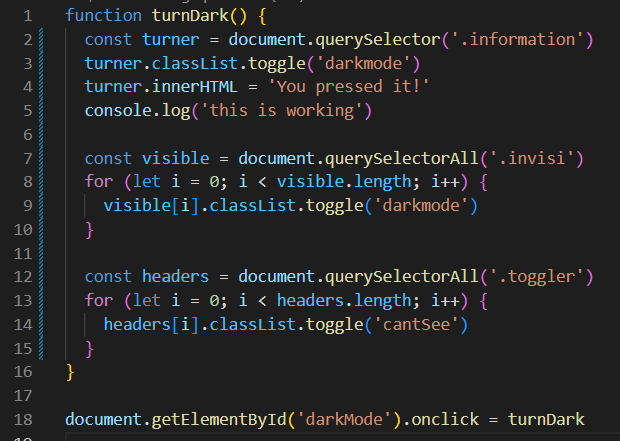

Javascript
Javascript is Human too
A webpage is a lot like a person. You got html as the bones. The structure. The flesh and skin is css, they provide volume and look pretty. Finally, the javascript is the brain. The logic centre that brings it all to life with movement and interactivity.
Bet you thought there were empty boxes on my webpage huh?
Think Again ;)
Control flow and loops?
The control flow is to javascript as the nervous system is to the human body. It is the way information is processed and passed along from the tippity top to the bitty bottom, or whatever appendage the neurons are going to. Now this flow can be redirected or terminated before it fully executes, which, could be due to any number of reasons such as: intentional, unintentional, or worst of all unexplainable.
Looping is exactly what it sounds like. You do something over and over. I'm not sure what else to say... Looping is exactly what it sounds like. You do something over and over. I'm not sure what else to say... Looping is exactly what it sounds like. You do something over and over. I'm not sure what else to say.......
Whose DOM is it anyway?
DOM stands for the Document Object Model which is just a fancy way of sayin how the page is structured. You see, much like a human, the little bits and pieces that make up a webpage have parents too. And just like their human counterparts, the children will inherit genes, or properties of their parents.
That is until they begin to go through their rebellious phase, and suddenly it's not cool to have the same background-color as your mother. So you set off on your own, to make a new id for yourself and create your own style. Thus, into the sunset you ride. Adorned in your border-width: 200px 100px; border-color: red; cape. Godspeed.
Alright real talk though, the DOM is very useful for accessing different parts of the webpage and tinkering with it through scripts or console commands. We've all seen the tutorial videos so theres not much for me to say there. I will include though the very very very simple js I used for this page as an example.
Arrays? Objects?
Ok here we go. Objects are like people. They are all similar but have different characteristics or "properties" that define each person. Now arrays. Arrays are a collection of things.
The only restriction is that they all have to be the same type within the array. This means you can have an array of people, an array of groups of people and so on and so forth. We could even have an array of functions, which I'm sure will be useful for something.
Oh, speaking of!
What is your prime directive function?
Functions are functional. They do things. A webpage is pretty static, that is to say, there is no movement. Nothing changes. That is until javascript came along and started fiddling with the different elements of the html. And functions are a great way to repeat certain fiddling techniques. Really all functions are are a bundle of code that you've named so you can call its name whenever you want and get it to run the bundle of code. Maybe functions are like dogs?